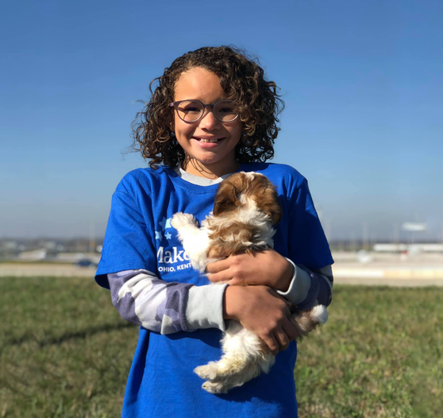
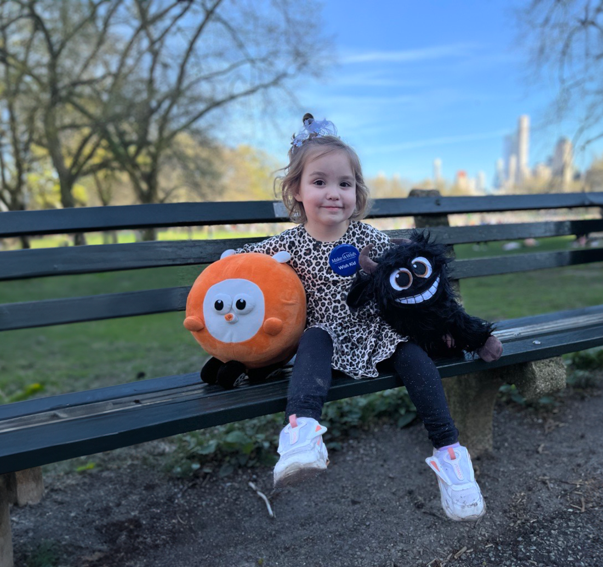

Wish Upon a Star, the whimsical charity for dreamers of all kinds, has made some truly "magical" wishes come true! From granting an eccentric billionaire his desire for a gold-plated yacht shaped like a unicorn, to helping a spoiled teenager fulfill their dream of owning an entire theme park for a day, this organization takes wish fulfillment to new and absurd heights. Forget about helping the needy—Wish Upon a Star specializes in the lavish, the unnecessary, and the downright ridiculous, making the impossible possible, as long as it's excessively extravagant!
|

Wish Upon a Star recently made six-year-old Nyla’s dream come true by turning her into the star of her own Broadway-style musical. With a glittering tutu, a famous cast, and an over-the-top performance, Nyla dazzled the audience, living out her fantasy of being a star for a day. This is Nyla with her little dog actor who was also in the musical. |

Wish Upon a Star made Joanna’s wish come true by bringing her imaginary friends to life—as plushies! Now, Joanna’s make-believe pals are cuddly companions she can carry everywhere, turning her imaginary world into a soft and snuggly reality |
At Wish Upon a Star, we specialize in making the most outlandish, over-the-top dreams a reality. Whether it’s creating a life-sized stuffed animal kingdom or building a unicorn-shaped yacht, no wish is too extravagant—or too unnecessary—for us to fulfill. We’re dedicated to turning wild fantasies into tangible experiences, prioritizing the whims of the wildly imaginative over mundane needs. With us, wish fulfillment isn’t just about making dreams come true—it’s about doing it in the most absurdly luxurious way possible!
Wish Upon a Star exists because we believe life is too short for ordinary dreams. While other charities focus on practical needs, we saw a gap in the market for the whimsical, the lavish, and the downright ridiculous. We’re here to ensure that no eccentric desire goes unfulfilled, turning the wildest imaginations into reality. Whether it’s for the fun of it or just because it’s possible, we exist to prove that sometimes, the most outlandish wishes deserve to come true, simply because they can.